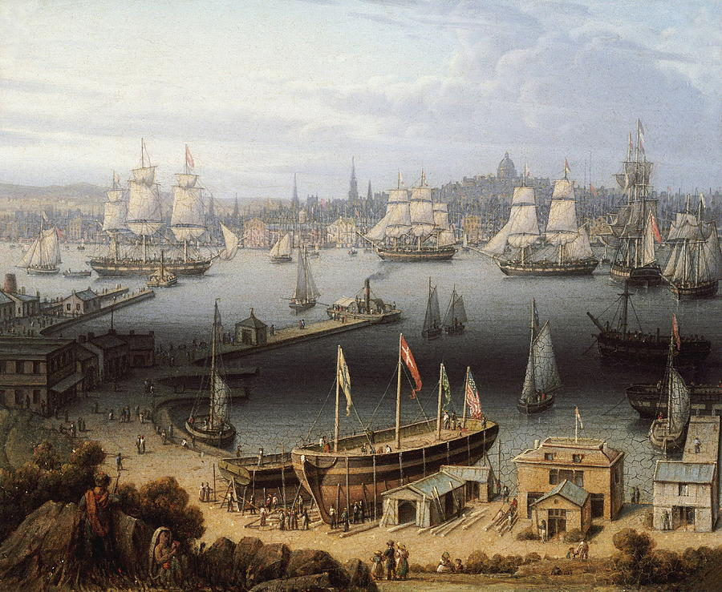

Poems
For Increase

Somewhere north of Boston; On a sidewalk made of brick; And warped by knotted roots of ancient ash; I wonder if Old Increase ever walked this selfsame path; All New England leanness; And the Spartan sensibilities; Of those early generations; Just a foothold ’gainst the darkness of the forests; The black first-period houses; And witches in the woods; Philippus Rex and fire; Licking the pales and humble homes of Springfield; All these things wrapped up around one man; The quintessential cleric; In his Geneva collar; Shepherd of that second generation; An age of heroes, nameless though they were; And yet their names are with us still, extracted from the rubble; Broken pieces hung as badges on our buildings; To claim a false succession from a bolder civ’lization; The city on a hill, said his own forebear; And all were watching then, and still they watch; But now it is the flick’ring of the box, and could his brimstone sermons; Singe the armor of our willful ignorance?; Sloth! He preached so heartily; Against such pigs as us, his heirs; Successors, anyway, at least; Moralizing at the trough and thinking us superior; A stiff-necked people! Increase would have smiled; E’en at that early age, he saw the turn; A thing is born, and it begins to die; He railed against it, yet they call him morbid; The thing about him is that he was right; And all of history is nothing more; Than stark moral’ty play; Upon the grandest stage, but not a whit more complicated for it; In every age, the lean and pious, bellicose; Conquer the obese epicurean; The Medes learned in a single generation; The tax exacted by their luxuries; And here we sit, as drunk as roaring Hell; Now drained the final dregs of vintage ’45; The last heroic age, and like the conqu’ring Medes; Its fruits exhausted in a generation; Well, Increase saw it all; And not through witchcraft but by revelation; How often did inspired writers count the turns; Of Israel’s Gomeric epic cycle; A simple truth possessed by simplest; All history is in the Bible found; Not in the sense they mean, perhaps, but still; A verity among the most profound; Those whom God loved seduced away; At every opportunity by wealth; Which leads to indolence and thence decline; And only broken, crawl they back to God; Just so, and inside of two hundred years; The Boston churches would deny the Christ; As Peter did after Gethsemane; And Arius before the Emperor; The cycle will play out again, again; Until the final curtain falls; And in the meantime, here’s a prayer for Increase; To intercede for us with Christ the Lord; And bid Him haste the turning of the wheel; ’Til we be lean and pious once again; And all the glory of the West, of Popes and Bishops, Puritan divines; And Kings and Knights, not run to naught while we all watch some Netflix show; Anyway, I hope he does not think it so insulting; To write a prayer to him and ask for aid; Idolater! He would have said in life; But now, his vantage something Universal; Increase, I pray your soul is with the very God of very God; Who’ll come again in glory to judge both quick and dead; In turn, I ask your prayers for us in that sublimest port and paradox of Old New England. In the Name of the Father and of the Son and of the Holy Ghost. Amen.
Matthew M. McGarry grew up in Rhode Island. He lives in Salem, Massachusetts and works as an attorney in Boston. He recently walked The Pilgrims’ Way to Canterbury.